Ce sunt componentele hardware?
Hardware-ul este partea fizică a unui sistem de calcul.
1. Procesor (CPU)
Procesorul, cunoscut și sub denumirea de unitate centrală de procesare, este creierul unui calculator. Acesta execută instrucțiunile din programele software și controlează majoritatea operațiunilor din sistem. Un procesor mai puternic poate îmbunătăți semnificativ performanțele generale ale unui computer. Cei mai populari producători sunt Intel și AMD, iar caracteristicile esențiale includ numărul de nuclee și viteza de ceas (GHz).
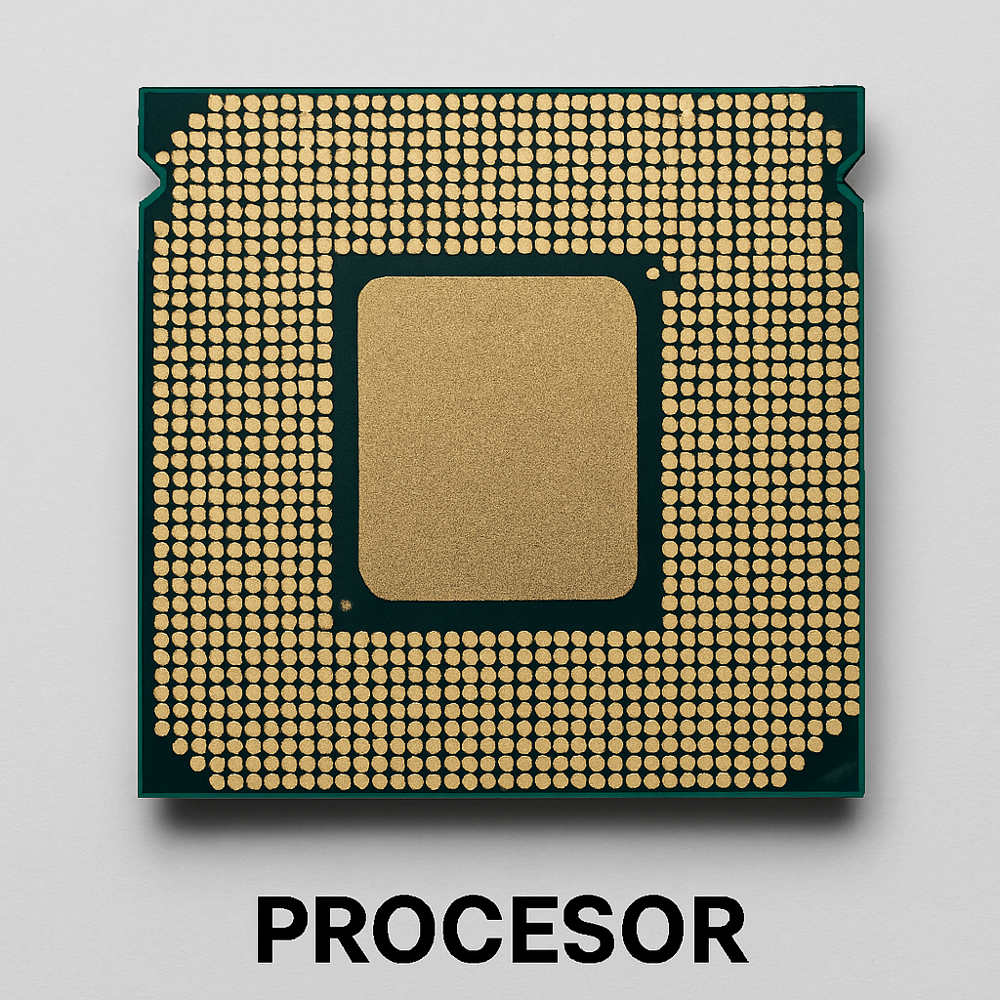
2. Placă de bază (Motherboard)
Placa de bază este componenta principală a unui sistem de calcul. Ea conectează toate celelalte componente hardware, inclusiv procesorul, memoria RAM, placa grafică, și unitățile de stocare. Placa de bază include și porturi pentru periferice și conectivitate, cum ar fi USB, HDMI și Ethernet. Există mai multe tipuri de plăci de bază, fiecare compatibilă cu diferite tipuri de procesoare și formate de carcasă.
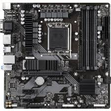
3. Memorie RAM (Random Access Memory)
Memoria RAM este un tip de memorie volatilă folosită pentru a stoca temporar datele și programele care sunt în prezent în utilizare. Cu cât mai multă memorie RAM are un computer, cu atât mai multe aplicații pot rula simultan fără a afecta performanța. RAM-ul mai rapid și mai mare îmbunătățește performanțele în sarcini precum editarea video sau jocurile complexe.
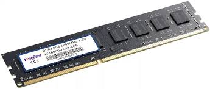
4. Placă video (GPU)
Placa video (GPU - Graphics Processing Unit) este responsabilă pentru procesarea imaginilor și a graficii, mai ales în aplicațiile de jocuri, design grafic și editare video. Plăcile video pot fi integrate (încorporate în placa de bază sau în procesor) sau dedicate (plăci grafice separate, mai puternice). Producători populari de plăci video includ NVIDIA și AMD.
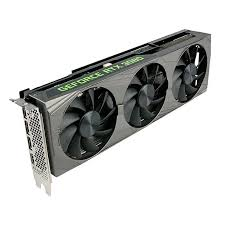
5. Stocare (SSD/HDD)
Unitățile de stocare sunt folosite pentru a salva datele și fișierele pe termen lung. SSD-urile (Solid State Drive) sunt mult mai rapide decât HDD-urile tradiționale (Hard Disk Drive), permițând bootarea mai rapidă a sistemului de operare și încărcarea rapidă a aplicațiilor. HDD-urile, deși mai lente, sunt mai accesibile și au o capacitate mai mare pentru stocarea datelor.
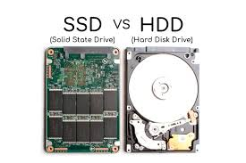
6. Sursa de alimentare (PSU)
Sursa de alimentare furnizează energia necesară pentru a alimenta toate componentele calculatorului. Aceasta convertește curentul alternativ (AC) din priză în curent continuu (DC) necesar sistemului. O sursă de alimentare de calitate și cu suficientă putere este esențială pentru a preveni problemele de instabilitate.
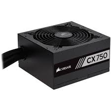
7. Carcasă (Case)
Carcasa este structura fizică ce adăpostește toate componentele hardware ale unui calculator. Aceasta protejează componentele, asigură o bună ventilație și ajută la gestionarea căldurii generate de procesor, GPU și alte părți. Carcasele vin în diferite dimensiuni și formate (de exemplu, ATX, micro-ATX) și sunt echipate cu ventilatoare și opțiuni de gestionare a cablurilor.
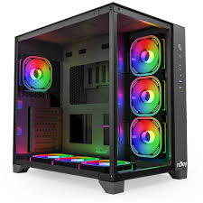
8. Sistem de răcire (Cooling)
Sistemul de răcire este responsabil pentru menținerea temperaturii optime a componentelor hardware, prevenind supraîncălzirea. Acesta poate include ventilatoare, radiatoare, pastă termică și soluții de răcire pe bază de lichid. Pentru un sistem de performanță ridicată, un sistem de răcire eficient este crucial.
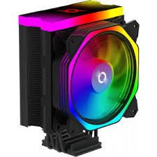
9. Unități optice (CD/DVD/Blu-ray)
Deși nu sunt la fel de populare ca în trecut, unitățile optice sunt încă utilizate pentru citirea și scrierea de CD-uri, DVD-uri și discuri Blu-ray. Acestea sunt mai rar întâlnite pe noile computere, fiind înlocuite treptat de soluții de stocare digitală.
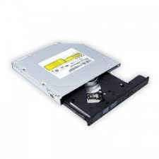
10. Plăci de expansiune și carduri
Plăcile de expansiune sunt adăugiri suplimentare care pot fi montate pe placa de bază pentru a extinde capacitățile unui calculator. Acestea pot include plăci de rețea suplimentare, plăci audio, plăci de captură video și multe altele.
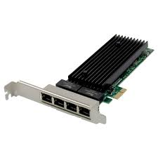
11. Periferice (Mouse, Tastatură, Monitor)
Perifericele sunt componentele externe care permit interacțiunea utilizatorului cu sistemul. Acestea includ tastatura și mouse-ul, care sunt esențiale pentru controlul computerului, dar și monitoarele care afișează informațiile vizuale. Alte periferice comune includ imprimante, boxe, webcam-uri și căști.
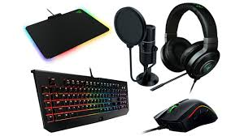